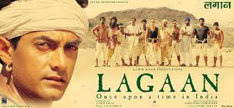
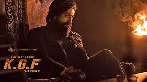

I love this movie because of the story which is completely based on historic truth. The Hero of this movie is Amir Khan who challenged Roman Empire for a cricket match to free his natives from paying double tax. Firstly, all the villagers refused to stand with him but gradually all villagers join him because they didn't bear the injustice of Roman Empire
All I love about this movie is action. In this movie the hero pretend to be a slave and join the other villagers who were abducted by Villain. He saves villagers from them and at last kills the villain and free villagers from opression.
This movie is based on Love Story. I love this movie because the Actress in this movie is my favorite.